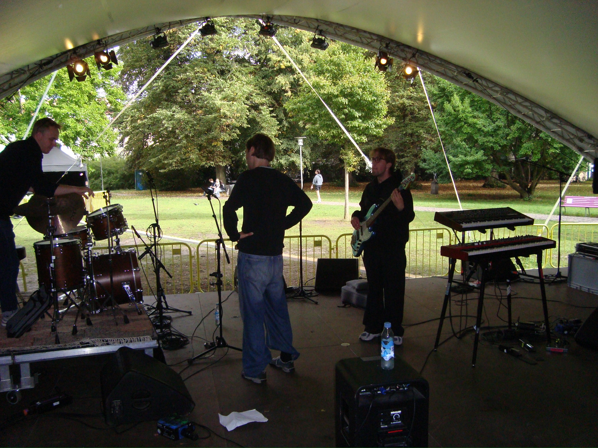

2026/2027 album tour
listen to our new song here <3
about
Enhver som ønsker at læne sig ind imod 00'ernes neo-soul og elektronisk futuristisk ambience, akustisk jazz og poetisk lyrik, kan smelte sammen i lyden af Tigeroak. En lyd de ønsker at dele med dig, lyden af dem og deres venskab. Kollektiv skabelse i et organisk og genrebrydende udtryk som dette, er et sjældent fund.
Med vokalen i front, der virker til at strømme direkte og ubesværet fra hjertet, skaber bandet melodier og atmosfærer så let, at musikken ofte lyder svævende og organisk, som drømme eller minder. Tigeroak lukker publikum ind i deres historie igen og igen, og man får lov til at høre om venskab, usikkerhed, og udviklingen op igennem ungdommen. De har fulgtes ad siden deres første udgivelse i 2019, uerfarne og ærlige var de, men lige så ambitiøse fra starten, som de er i dag.
På vejen til 2026 har de samlet to DMA-nomineringer sammen, en af dem vundet, for årets jazz-single med sangen Living and Living, også navnet på deres debutalbum (2023). De har rejst jorden rundt for at spille og skrive musik. De har modtaget stjerner og hjerter, fem fra politikken, og seks stjerner fra Gaffa for deres livekoncerter, blandt andre deres First Days-koncert på Roskilde Festival 2024. Deres debutplade er indspillet på Abbey Road studios i London, og Kina, Frankrig, Norge og Schweiz er lande Tigeroak har haft på deres tourplakater.
Tigeroak dyrker nærvær og tilstedeværelse på scenen. De arbejder frit og intuitivt med sangskrivning og lader sig kun lede af deres kunstneriske inspirationer, deres venner og hinanden.
Laurits Steen Møberg - guitar+prod
Anna Prinds - voice
Martine Bak Toldam - keys
Elias HP - bass
Jakob Marker - drums